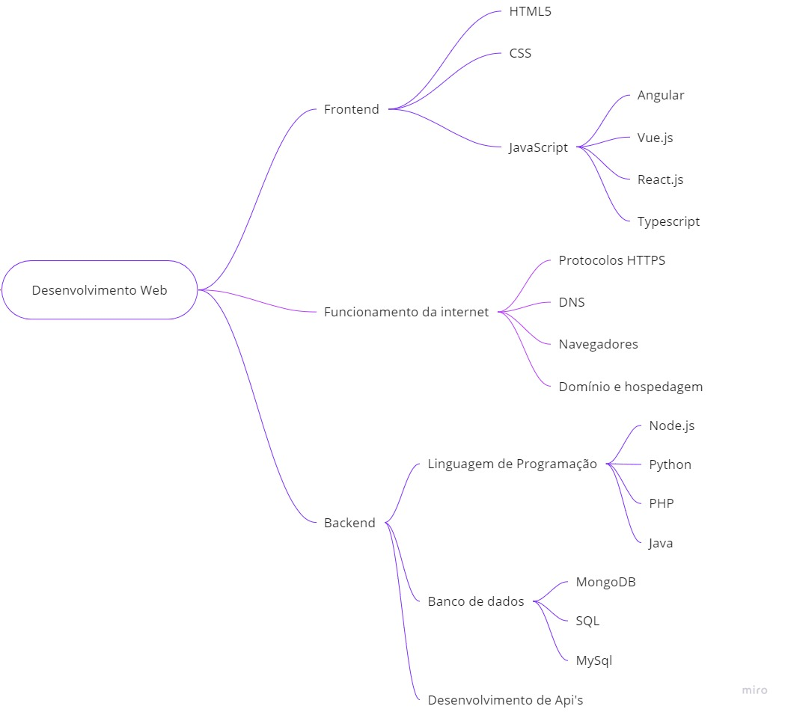
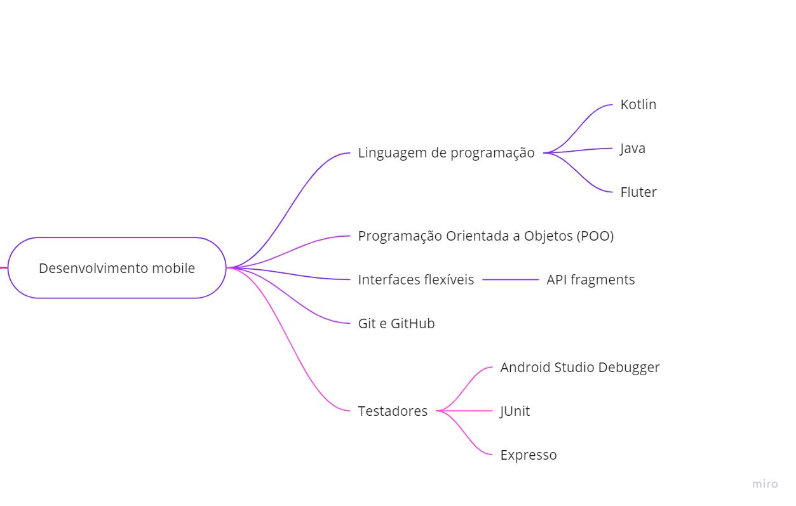

Roadmaps de Programação
Estar perdido acerca do que estudar para se tornar um programador é totalmente
normal, principalmente quando se deparamos com a quantidade de tecnologias, linguagens de
programação e a diversidade de carreiras existentes dentro da área de desenvolvimento. Logo,
é de extrema importância estar orientado para que a frustração de estar perdido não te faça
desistir. A seguir te mostraremos dois roadmaps que você pode seguir para se tornar um
desenvolvedor web ou um desenvolvedor mobile.
Desenvolvimento Web
Um desenvolvedor web é o profissional responsável pela construção de aplicações web.
Portanto, é necessário que esse profissional seja capaz de construir aplicações completas, e para
isso é preciso necessariamente saber sobre o desenvolvimento front end, como back end. É um
profissional completo, e logo, precisa de quantidade de domínio de tecnologias maior do que
algumas áreas específicas. Segui as tecnologias e conhecimentos que um desenvolvedor web
necessita dominar:
- Funcionamento da internet (HTTPS, DNS, navegadores, domínio, hospedagem e etc.)
- Dominar a tríade do desenvolvimento front end HTML, CSS e JavaScript.
- Conhecer sobre versionamento de código e hospedagem de repositórios (Git e
Github);
- Conhecer sobre algum framework para JavaScript (React.js, Vue.js ou Angular)
- Utilizar verificadores de código, como TypeScript, para detectar erros
- Utilizar frameworks de testes, como Jest, react-testing-library, entre outros, para
testar o funcionamento do programa
- Conhecimento sobre sistemas operacionais
- Conhecer sobre alguma linguagem de programação voltada para o back end (Python,
PHP, Node.js, Java e etc.)
- Conhecer e utilizar APIs, para implementação e compatibilidade dos programas
- Conhecer e manipular os tipos necessários de banco de dados
- Seguir padrões de arquitetura

Desenvolvimento Mobile
Assim como o desenvolvedor web, o desenvolvedor mobile conta com a necessidade do
domínio de algumas habilidades e tecnologias. Já que esse profissional trabalha com tecnologias
específicas para o desenvolvimento de softwares para dispositivos mobile. Posteriormente segui
o roadmap para se tornar um desenvolvedor mobile.
- Utilizar alguma linguagem de programação para desenvolvimento mobile. (Kotlin, Java
ou Fluter).
- Conhecer sobre POO (Programação Orientada a objetos)
- Utilizar sistemas de controle de versão e serviços de hospedagem de repositórios.
- Utilizar a plataforma Activity, para otimizar a interação do usuário
- Construir interfaces flexíveis, usando a API Fragments.
- Implementar recursos de segurança
- Usar testadores (Android Studio Debugger, JUnit e Espresso)

Obviamente que esse roadmap é apenas um caminho inicial para dar os primeiros nos
estudos de programação. Dessa forma, existirá tópicos mais específicos que será necessário o
seu domínio, e muitas tecnologias que você vai precisar para se aprimorar na área de
desenvolvimento desejada.